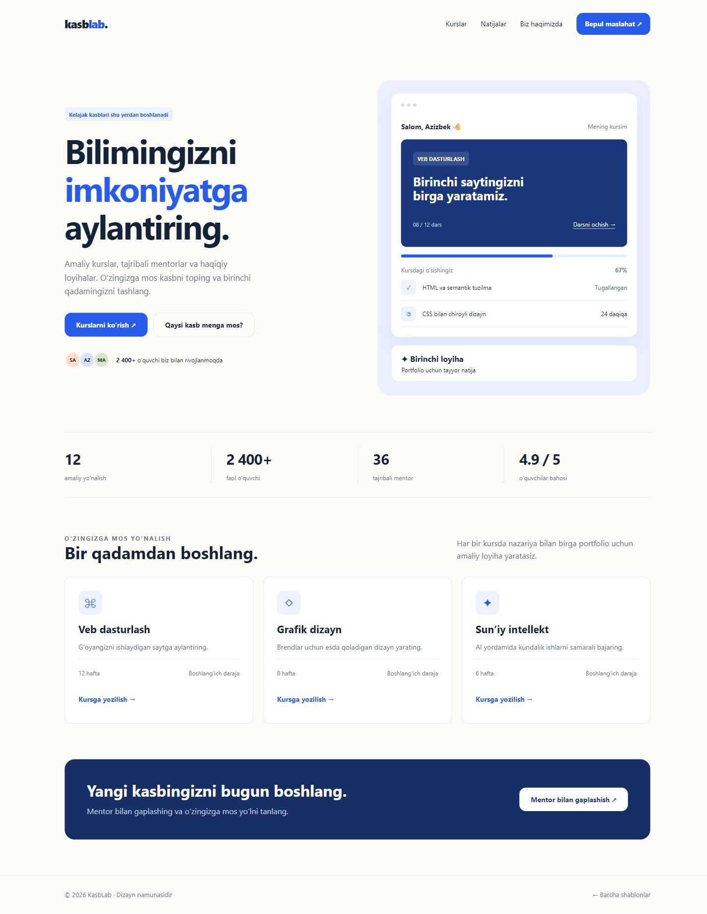

KasbLab
01 / Ta’lim / platformaVARIANT 01
KasbLab
Oq fon, katta sarlavha, ko‘k aksent va kurs kartalari. Toza, ishonchli mahsulot dizayni.
Kurs tanlash · ariza formasi · mobil menyu
Mos mavzular: Ta’lim, kasb, yoshlar, AI va xizmat platformalari
Jonli namunani ochish AI bilan moslashtirish →